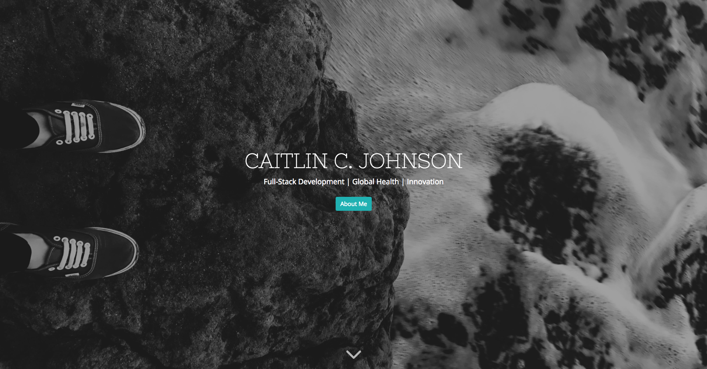
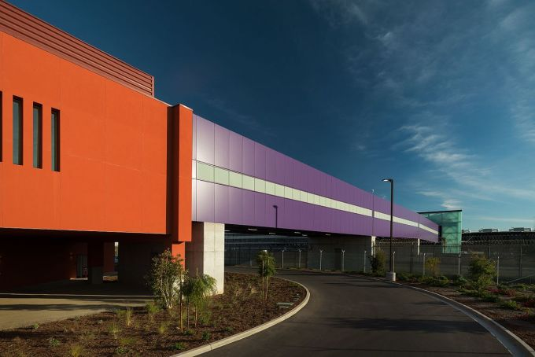
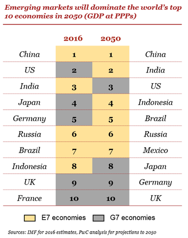

Upon reading the above quote in Your One Word by Evan Carmichael, I had a life-altering self realization that eventually resulted in me leaving a well-paying, stable job at a healthcare management consulting firm to take a leap of faith into
an area in which I had no expertise in: the startup world. I distinctly remember that moment – I was on an Avianca flight somewhere over Mexico’s Sierra Madre del Sur mountain range on my way back from Bolivia. But before I get into the “why”,
I’ll give you some background about myself.
My name is Caitlin Johnson. I was born in New Mexico, raised outside of Atlanta in the suburbs, and spent the majority of my twenties in different parts of the United States until I found my forever home in the San Diego-Tijuana metropolitan
area. And as I moved around the country, I also wore many different hats: biomedical engineer, customer service representative, technical analyst, and healthcare management senior consultant. And somewhere along the way, I discovered that
I’m truly passionate about creating innovative solutions in order to connect the patients with their providers within rural communities around the world. I knew that my current job situation didn’t allow me to pursue my passions; however,
at that moment, I didn’t fully understand that I had the power to make decisions that would allow me to do so.
Upon realizing this, I decided to embark on my career transition into full-stack development. To you as the reader, there may seem to be a disconnection between full-stack development and my background as a healthcare management consultant,
but throughout my career I’ve always done a little bit of programming on the side, whether it was to create a complicated Microsoft Excel macro in VBA or to develop simple iPhone iOS applications in Swift. Programming, to me, gives me the
perfect balance of utilizing the logical side of the brain and the creative side of the brain, and I decided it was time to take this on as a full-time gig.
Which leads to why I’m here. I’m hoping to use this medium to showcase my portfolio for full-stack development and to interact with other innovators, developers, and individuals that are also passionate about changing the world. But I also hope
to use this to share my experiences along the way.
Full-Stack Development Portfolio

Personal Website
My personal website which consists of both a portfolio section and a blog section.
Hello, I’m Caitlin, a full-stack developer who is endeavoring to amplify my impact within global health through web development. This site showcases select projects and blog posts to demonstrate my talents and experiences. Contact me if you have questions!
The TransitionJune 22, 2018If someone told me five years ago that I would be starting my own blog, I would have probably laughed and shrugged it off as a joke. Not that I’m opposed to blogging or similar communications of sorts, but I’m a person of few words. Very few words. My friends and family can attest to […]
Bigger. Bolder. Global.July 8, 2018“Entrepreneurship is the window to change the world.” Rob Ryan During my first week of “funemployment”, I decided to get a head start on developing my network by attending a handful of sessions at San Diego Startup Week that took place at the end of June. While there were many valuable takeaways from all of […]
Build Bridges, Not WallsJuly 18, 2018And while people far away from the border argue about how to close it off, residents of San Diego and Tijuana are plotting to build bridges across it – by sharing airports, cultural offerings, businesses and even sporting events – so that they can accomplish even more together. Vanishing Frontiers by Andrew Selee As a continuation […]
Build Bridges, Not Walls
July 18, 2018
As a continuation of my observations about San Diego Startup Week, I wanted to touch upon what I believe is San Diego’s most unique aspect about the city: Tijuana. Yes, I truly believe that the best thing about San Diego has nothing to do with
the amazing weather, but rather, its proximity to Tijuana that allows it to act as the gateway to Latin America. For those unfamiliar with the layout of the area, it takes about 20-25 minutes on a good day for me to get from downtown San Diego
to Zona Río in Tijuana (okay, maybe I go a little above the speed limit). Not only does Bloomberg value the San Diego-Tijuana connection at $230 billion [1], but according to the Binational Committee on Regional Opportunities, the main border
crossing between the two cities is the busiest international crossing in the world [2].
And San Diego has noticed within recent years according to Andrew Selee, with the following excerpt from his book, Vanishing Frontiers:
In mid-2012, a poll conducted by the San Diego Foundation showed that only 9 percent of San Diego’s residents thought their city’s future was closely tied to Tijuana’s […] Three years later, a second poll conducted by the University of California,
San Diego, found that more than 70 percent of San Diego residents saw Tijuana as a major part of their future.

All in all, San Diego is in a prime location with easy access to Tijuana. Yet, based on my observations and discussions at San Diego Startup Week, it appears that most of us “talk the talk” when it comes to building relationships with our southern
neighbor, but only a few of us actually “walk the walk”. The conference did have a binational track that consisted of a handful of speakers that are actively engaged with both countries along the wall, which was the primary reason why I attended
the conference itself given my aspirations to create a global startup; however, I was surprised at the low number of San Diegans that have ventured south of the border. I was even more surprised by the low number of San Diegans that have interacted
with Tijuanese (local slang for residents of Tijuana) for their startups. And I was especially surprised by the lack of acknowledgement of Tijuana’s existence by San Diegan conference speakers during their session about San Diego’s ecosystem
(until someone in the audience called them out for it).
Before this turns into a diatribe, I want to explain why San Diegan startups need to pay more attention to Tijuana. The city itself is full of global companies that provide an abundance of resources to the startup community, such as Tijuana
Innovadora, a biennial mega-conference hosted by well-established companies that promotes innovation in Tijuana and provides startups an opportunity to market themselves. Additionally, companies in Tijuana are supported by at least 8,000 professional,
scientific and technical service providers, and startups have access to numerous incubators, accelerators and coworking spaces [3]. Sure, it’s cheaper there, which I can appreciate as a huge benefit for startups, but I caution in letting that
overshadow the numerous additional benefits that Tijuana can provide to San Diegan startups.

And most importantly, if a startup is a business that is designed to scale and grow rapidly, then why stop at the border? Why not leverage the market in Tijuana to expand into Mexico and eventually the rest of Latin America? The consumer markets in United States and Mexico are more intertwined than believed, and American companies are continuously finding success selling their products within the Mexican market. And Mexico is predicted to be a top 10 global economy by 2050, which
gives startups all the more reason to establish their footprint across the border [4].
In summary, while heavy collaboration exists between Tijuana and San Diego within well-established companies and government bodies, it appears almost non-existent within the San Diego startup ecosystem. Let’s take it upon ourselves to be more
engaged with our southern neighbor and continue to build more bridges over the wall.
During my first week of “funemployment”, I decided to get a head start on developing my network by attending a handful of sessions at San Diego Startup Week that took place at the end of June. While there were many valuable takeaways from all
of the sessions that I attended – which I will most likely reference in future posts – the one that really hit home was Rob Ryan’s “How to Build a Global Startup” session on June 26. I was attracted to this session since I have aspirations
to create my own global startup focused on healthcare, so I figured that at the minimum, I should at least listen and learn from others that have endeavored on the same path.
But I walked away with much more than that.
Rob Ryan somehow broke down what appears to most of us a very complex, overwhelming scenario of establishing a global startup into steps that are much more manageable and easy to visualize. He didn’t necessarily give us a To Do list for creating
a global startup, but rather, he shared with us his experiences of creating one of his own and sharing with us lessons learned on how he accomplished creating his global startup company, GrowthHax. I won’t reiterate all of the key takeaways
from his session, but in short, it’s as simple as putting yourself out there to network and actually work with like-minded, passionate individuals in other countries. And forming a global startup can be done by anyone, whether you’re a 24-year-old
Harvard graduate aspiring to share their knowledge with the world or a 65-year-old blue collar retiree that wants to take a shot at changing the world.
While I learned a lot of valuable lessons during Rob Ryan’s speech, it also inspired me to start bigger. And bolder. And globally. Well, at least within Latin America. My initial plan was to launch the product – whether it’s an app or a service
– in one country outside of the United States, but then I thought to myself…why start with just one country? Why not more? All I need to do is start putting myself out there and talk with people that are just as passionate as I am about solving
problems.
I’m ready to start changing the world, one conversation at a time.
If you want to be inspired by Rob Ryan, I highly recommend checking him out on the following social media channels:
If someone told me five years ago that I would be starting my own blog, I would have probably laughed and shrugged it off as a joke. Not that I’m opposed to blogging or similar communications of sorts, but I’m a person of few words.
Very few words.
My friends and family can attest to this. This is why I’m drawn to social media apps that focus more on pictures (Instagram) or involve few words (Twitter). But blogs? I wouldn’t even know how to become a successful blogger with so few words,
but maybe I can create my own style of blogging by communicating my experiences with more pictures and less words.
So here I am, writing my first blog. And why am I here? Good question. For full transparency, I’m here because I’m making a career change to full-stack development, and I want to leverage my experiences during the transition and onward into
learning lessons and provide insight into how I believe newly-learned concepts can be applied to healthcare.
And why am I just now learning about full-stack development? That’s another good question. I recently left my job as a senior consultant for a well-known healthcare management firm to take a full-stack developer boot camp at LEARN Academy here
in San Diego, and I plan to use this skillset to amplify my impact within healthcare and to pursue my passion of developing innovative solutions to bridge communications between patients and providers within rural communities around the globe.
Going from consulting to programming may seem like a huge jump, but in reality I’ve been programming here and there over the past ten years, so the concepts aren’t foreign to me.
Which leads to why I’m here. I’m hoping to use this medium to showcase my portfolio for full-stack development and to interact with other innovators, developers, and individuals that are also passionate about changing the world. But I also hope
to use this to share my experiences along the way.